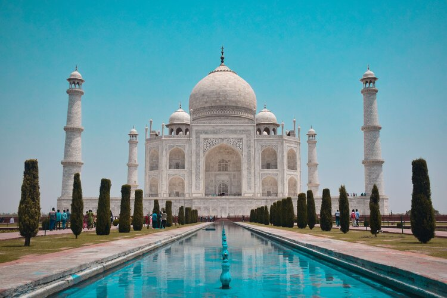

Taj Mahal, India
What is the Taj Mahal?
The Taj Mahal is an eye-catching marble mausoleum located in the Agra region of India. The construction of this eye-catching building was commissioned in by the 5th Moghal Emperor Shah Jahan to commerorate his wife Mumtaz Mahal after she passed. It is believed the construction was completed in 1643 thanks to the work of 22000 people involved in the project. No tools were used construction of the Taj Mahal, making this building an even more impressive feat. The site consists of a Mosque and guest house as well as having 42 acres of well-kept grounds.
Tips on visiting
The Taj Mahal is easily accessible, walkable from a lot of hotels within the Agra region with the option of getting a taxi if you're staying further afield. If you are based in Delhi, you can get a train to Agra which takes around 4 hours.
Entry to the grounds costs ₹50 with an additional ₹200 required to enter the mausoleum. It is recommended to allocate 2 to 3 hours to explore the Mausoleum as well as the vast grounds and gardens.